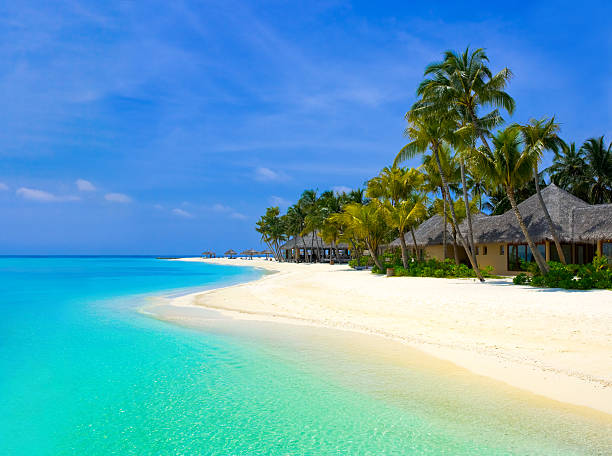
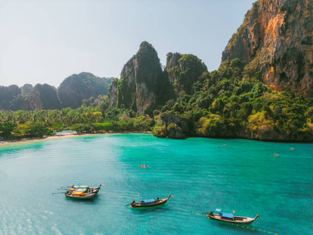

TOURIST SPOTS IN THE PHILIPPINES

BORACAY
Boracay Island is a small island located in the Western Visayas region of the Philippines.
It is one of the country's most popular tourist destinations, known for its beautiful white sandy beaches, crystal-clear waters,
and vibrant nightlife.Boracay Island is just seven kilometers long and one kilometer wide, but it is packed with fun-filled activities and amazing sights. The island's main attraction is its beaches.
Water activities are also a popular attraction on Boracay Island. The crystal-clear waters of the island offer a perfect playground for snorkeling, diving, and island hopping.
The island is home to many dive shops offering courses for both beginners and experienced divers. Visitors can explore the vibrant marine life and coral gardens that thrive in the waters surrounding the island.
Boracay Island's nightlife is also a must-see attraction. The island is famous for its beach parties and lively bars. Visitors can enjoy a cold drink while listening to live music or dancing the night away.
Many bars and restaurants offer happy hour promos and drink specials, making it easy to party on a budget.Boracay Island may be small, but it is packed with unforgettable experiences.
From its pristine beaches to its vibrant nightlife, there is something for everyone on this paradise island. So pack your bags, put on your sunscreen, and get ready for an unforgettable adventure on Boracay Island!

EL NIDO,PALAWAN
El Nido really is a magical place. From its ageless towering marble cliffs to its white sandy beaches with crystal clear water, many refer to it as paradise.
There are over 50 beaches to discover, so many in fact that sometimes you feel as if you are on your own secluded private beach.
You will also find enchanting lagoons with tranquil turquoise-green water, caves that can take you to hidden beaches, and a very diverse variety of wildlife.
El Nido is a top destination for island hopping, book your boat, take some food, some drinks in a cool box and disappear into the heavenly marine reserve that is Bacuit Bay.
It is a truly relaxing and inspiring place; Alex Garland wrote "The Beach" while living here. Scuba diving is also a popular activity here with over 30 dive sites for varying levels and skills;
from taking the plunge and learning to dive for the first time, to perfecting your expertise and advancing your qualifications.Yet El Nido has so many different treasures to offer beyond the obvious.
Further activities available include cliff climbing, waterfalls, kayaking, cave exploration, windsurfing, plus you can also hire a motorbike and discover the surrounding north of Palawan.

MAYON VOLCANO
Of all the volcanoes in the Philippines, Mayon Volcano or Mount Mayon is the most iconic because of its perfect cone shape. With the majestic view it offers,
doing Mayon Volcano tours like the Mayon ATV activity has become the main itinerary of travelers visiting the region. Mayon Volcano stands 2462-meter-high and is located in province of Albay in the Bicol region at the southeast end of Luzon island.
It also deemed to be the most active volcano in the Philippines with its record of approximately 50 eruptions in the past decades. Mayon Volcano towers above the region, primarily in Legazpi City, and provides a breathtaking backdrop wherever you are in the province.
Legend has it that its name came from ‘magayon’, a Bicolano word that means beautiful which is more than appropriate to describe how stunning this natural scenery is from every angle.
TOURIST SPOTS IN SOUTH KOREA

Namsan SEOUL TOWER
N Seoul Tower, also commonly known as Namsan Tower, is an iconic Seoul landmark that provides
bird’s-eye views of the city. It is both an observation and communication tower located at the top of
Namsan Mountain in the geographical center of the city. N Seoul Tower is a very popular tourist spot
and one of the top must-see attractions for any travel itinerary. It is also a popular date spot
among locals. N Seoul Tower is both a tourism and a cultural landmark. It’s a fantastic spot not only
to take in views of the city but to learn a little bit about Seoul and South Korea while you are
there. On top of being a landmark that you can visit, N Seoul Tower is beautiful to look at from afar,
especially at night. Using the latest in LED technology, the tower is always lit up in various
arrays of colors and patterns. The protected area around N Seoul Tower is also intended to display
the harmony that can exist between nature and 21st-century, state-of-the-art construction. General
car traffic is restricted in order to keep Namsan Mountain clean and green.

GYEONGBOKJUNG PALACE
The largest palace of the Five Grand Palaces constructed by the Joseon dynasty, Gyeongbokgung
Palace in northern Seoul served as the main residence for the Kings' household. Built in 1395 with
over 7700 rooms the palace stood until the late 1500s when it was destroyed by fire during the Imjin
war. This is the most popular tourist attraction in South Korea, and with good reason.
It's been around for over 600 years and despite many renovations and changes, it still retains its
iconic status as one of Seoul's top places to visit. Located in northern Seoul, Gyeongbokgung Palace
is home to several museums (including a traditional Korean art museum) and holds regular concerts
featuring traditional Korean music, dance shows from local schools of dance, and other cultural
events.Along with the temples and attractions inside the palace, they still run the changing of the
guard twice per day an it is really worth seeing.

SEORAKSAN NATIONAL PARK
One of South Korea's most beloved and beautiful national parks, and a Unesco Biosphere
Protection site, Seoraksan is most celebrated for its oddly shaped rock formations and ancient
Silla-era temples.Seoraksan national park is known for the fantastic views of the sunrise and sunset.
In addition to Daecheongbong Peak, Seoraksan Mountain has some 30 grand peaks, such as Socheongbong,
Hwachaebong, and Jungcheongbong. Not only does this park offer hikes for any level of expertise,
but if offers some of the most beautiful sceneries of Korea.
TOURIST SPOTS IN THAILAND

WAT ARUN
Wat Arun is the missile-shaped temple that rises from the Chao Phraya River's banks. Known as
Temple of Dawn, it was named after the Indian god of dawn, Arun. It was here that, after the
destruction of Ayuthaya, King Taksin stumbled upon a small local shrine and interpreted the discovery
as an auspicious sign that this should be the site of the new capital of Siam. Located on the west
bank of the Chao Phraya River, Wat Arun is famous for its magnificent 79-meter-high central spire,
reputed as being Thailand's Eiffel Tower, which has a unique design and fine craftsmanship. It is the
best place to overlook the Chao Phraya River and enjoy the night view. Given the beauty of the
architecture and the fine craftsmanship, it’s not surprising that Wat Arun is considered by many as
one of the most beautiful temples in Thailand.

PHUKET
Phuket province is located in southern Thailand. It is the biggest Island of Thailand and sits
on the Andaman sea. The nearest province to the north is Phang-nga and the nearest provinces to the
east are Phang-nga and Krabi. Phuket has a large Chinese influence, so you will see many Chinese
shrines and Chinese Restaurants around the City. A Chinese Vegetarian Festival is held there every
year. While the Chinese community is quite big, there are many other ethnicities bringing all their
traditions and festivals from all over the world to Phuket. Being a big Island, Phuket is surrounded
by many magnificent Beaches such as Rawai, Patong, Karon, Kamala, Kata Yai, Kata Noi, and Mai Khao.
Laem Phromthep viewpoint is said to feature the most beautiful sunsets in Thailand. It isn’t all
just Beaches though, there is also fantastic classical architecture such as the Goom Restaurant.
That and the very welcome atmosphere and the famous Phuket NIGHTLIFE, you can see why the Island
is a hotspot for tourists in Thailand.

CHIANG MAI
With beautiful nature blended with Lanna Culture and colours of contemporary perfectly Chiang
Mai is, therefore, a province that has many tourists, both Thai and foreigners, come in many millions
each year. Popular tourist activities in Chiang Mai include worshipping the Phra That doi suthep,
which is an important Landmark of Chiang Mai people. Experience the Local way of life and shop for
stylish handmade products at Thapae Walking Street. Visit various species of plants at the Queen
Sirikit botanical Garden and Rajapruek Royal Park. Do not miss to shop art products, taste local
CUISINE and see Cultures on Nimmanhaemin Road. In addition, nature and mountain tours are another
activity that should not be missed when visiting Chiang Mai, whether stepping on the highest point
of Thailand at the top of doi inthanon. Absorb the beauty of the rice fields, feel the Cool breeze
while watching the giant tiger flower at Doi Ang Khang. Experience Ecotourism HomeStay in Mae Kampong
and visit Hmong villages in Doi Pi and many more.